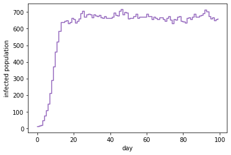
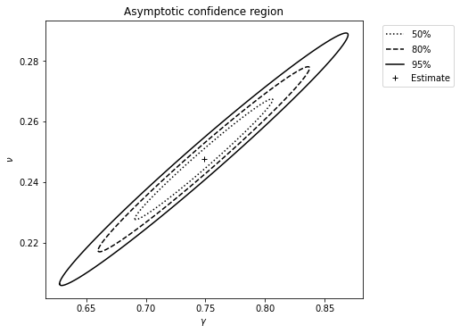
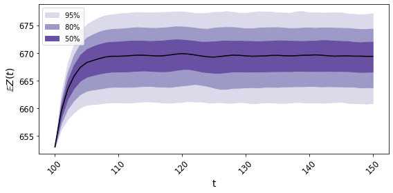

BirDePy: Birth-and-death Processes in Python¶
BirDePy is a Python package for working with continuous time birth-and-death processes. It includes functions which can be used to approximate transition probabilities (birdepy.probability()), estimate parameter values from data (birdepy.estimate()), simulate sample paths (birdepy.simulate.discrete() and birdepy.simulate.continuous()), and generate forecasts (birdepy.forecast()). The main focus of the package is the estimation of parameter values from discretely-observed sample paths, however the much more straightforward case of estimation of parameter values from continuously observed sample paths is also included.
You can install BirDePy using pip. To do this open Python and execute:
pip install birdepy
You may also need to install some dependencies (listed below).
BirDePy is developed on Github, the source code is found here.
Usage Example¶
Suppose we are interested in the susceptible-infective-susceptible model. This is the Verhulst model with rate of spread given by \(\gamma\), recovery rate given by \(\nu\), population size given by \(1/\alpha\) and \(\beta=0\):
import birdepy as bd
import numpy as np
model = 'Verhulst'
rate_of_spread = 0.75
recovery_rate = 0.25
population_size = 1000
true_parameters = [rate_of_spread, recovery_rate, 1/population_size, 0]
simulation_horizon = 100
initial_number_infected = 10
obs_times = np.arange(0, simulation_horizon+1, 1)
BirDePy’s function birdepy.simulate.discrete() can be used to simulate a possible sample path:
number_infected = bd.simulate.discrete(true_parameters, model, initial_number_infected,
obs_times, seed=2021)
The path can be plotted:
import matplotlib.pyplot as plt
plt.step(obs_times, number_infected, 'r', where='post', color='tab:purple')
plt.ylabel('infected population')
plt.xlabel('day')
plt.show()
It looks like this:
If we assume \(\beta=0\) is known, BirDePy’s function birdepy.estimate() can be used to estimate the other parameter values:
initial_guess = [0.5]*3
p_bounds = [[1e-6, 1]]*3
est = bd.estimate(obs_times, number_infected, initial_guess, p_bounds,
framework='dnm', likelihood='da', model=model,
known_p=[0], idx_known_p=[3])
print('Estimate:', est.p)
print('Standard error:', est.se)
BirDePy produces an estimate of [0.7590, 0.2411, 0.0010] with standard errors [0.0566 0.0386 5.23e-05]. The argument of framework is set to ‘dnm’ so direct numerical maximisation is used to find a maximum likeliood estimate. The argument of likelihood is set to ‘da’ so a diffusion approximation is used to approximate the likelihood function.
If we suppose that \(\alpha=0.001\) is known, a confidence region can be produced for the remaining two unknown parameters by setting ci_plot to ‘True’:
est = bd.estimate(obs_times, number_infected, [0.5]*2, [[1e-6, 1]]*2,
framework='dnm', likelihood='da', model=model,
known_p=[1/population_size, 0], idx_known_p=[2, 3], ci_plot=True,
xlabel='$\gamma$', ylabel='$\\nu$')
It looks like this:
A forecast confidence interval can be made:
future_t = np.arange(100, 151, 1)
bd.forecast('Verhulst', number_infected[-1], future_t, est.p, cov=est.cov,
p_bounds=[[1e-6, 1]]*2, idx_known_p=[2, 3], known_p=[0.001, 0],
interval='confidence', xticks=np.arange(100, 151, 10))
It looks like this:
The confidence intervals contain future mean behavior with high probability.
Dependency List¶
Required:
numpympmathscipymatplotlibgwr_inversionscikit-learn
Optional:
numbacudatoolkit
Theoretical Background
Core Functions API
- birdepy.probability()
- birdepy.probability(method=’da’)
- birdepy.probability(method=’Erlang’)
- birdepy.probability(method=’expm’)
- birdepy.probability(method=’gwa’)
- birdepy.probability(method=’gwasa’)
- birdepy.probability(method=’ilt’)
- birdepy.probability(method=’oua’)
- birdepy.probability(method=’sim’)
- birdepy.probability(method=’uniform’)
- birdepy.estimate()
- birdepy.simulate.discrete()
- birdepy.simulate.continuous()
- birdepy.forecast()
CUDA Functions API
Further reading¶
The package is also described in detail in [HautphennePatch2021] . If you use BirDePy for published research, then please cite this paper.
- HautphennePatch2021
Hautphenne, S. and Patch, B., 2021. BirDePy: Parameter estimation for population-size-dependent birth-and-death processes in Python.